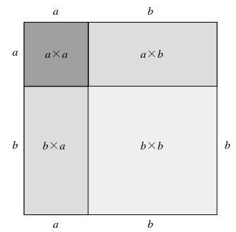
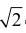
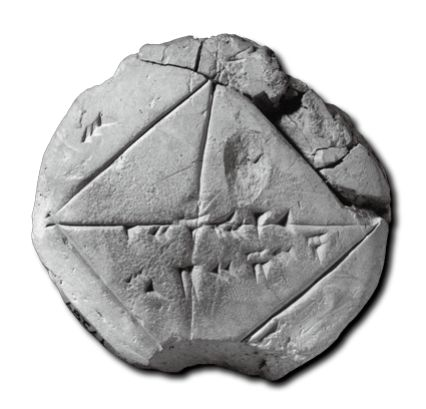
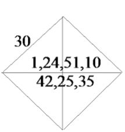
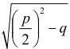
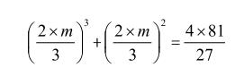
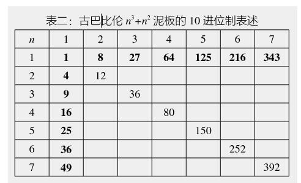

图 1：古代巴比伦人利用几何作图得到对二项式（a+b）2进行展开的数学公式。这种利用几何方法解决数学问题的思路后来被古希腊人发挥到极致。左上角深灰色的正方形的边长是a，面积是a×a。右下角的浅灰色正方形面积是b×b。同理，两个烟灰色的长方形的面积是a×b。所以，边长为a+b的正方形的面积就是所有这些正方形和长方形面积的和，也就是a2+2ab+b2。所以就得出(a+b)2=a2+2ab+b2
根据泥板的记录，我们知道古巴比伦人还导出了（a-b）2的二项式展开：
（a-b）2= a2-2×a×b + b2
知道了（a+b）2和（a-b）2的二项式展开，任何两个正整数a和b的乘法就可以通过泥板来计算。这跟我们今天背乘法口诀的做法很不一样。有兴趣的读者不妨自己试一下，我们把它作为练习题放在本章的后面。
至于除法，巴比伦人制作了计算倒数的泥板，也就是n和1/n的表格。这样，a 除以b这类问题就变成了a 乘以1/b。
古巴比伦人已经懂得怎样开平方。美国耶鲁大学在1944年搜集到一块著名的泥板，上面有一幅保存良好的几何图。这是一个正方形和两条对角线（图2），正方形的边长是30。在水平的对角线上方，泥板的制作者刻下了【1】【24】【51】【10】这几个古巴比伦数字。转换成10进位制，这相当于141 421 36……。在水平对角线的下方，有一组数字【42】【25】【35】，相当于10进位数424 263 88……。这实际上是一道我们熟悉的几何题：边长为30的正方形的对角线长度是多少？我们知道，正方形的对角线的长度=正方形边长×

。因此边长是30×的正方形，其对角线的长度就是30=42.42 640……（=1.414 213 56……）。现在，你能看出水平对角线上下那两组数字的含义了吧？对了，对角线上面的数字是不带小数点的（和现在我们算出的数值有一些误差），下面是30x。

图2：左边是著名的巴比伦泥板YBC7289，右边是泥板上古巴比伦数字的现代表述。这枚泥板证明，古巴比伦人已经能够进行开平方计算，并且把精确计算到小数点后面第五位
这张图说明，古巴比伦人已经知道勾股定理，而且能够相当精确地进行开平方计算。他们得到的的值已经精确到小数点后面第五位。
求解二次方程，对古巴比伦人来说已经相当熟悉。早在公元前21世纪，他们就开始处理类似于下面这个二元方程组的问题了：
x+y=p，xy=q（3）
尽管他们还没有任何代数的知识，但他们已经看出，这两个方程等价于一个一元二次方程：
x2+q=px
根据泥板记录，我们知道他们是按照下面的求解方法计算x的：
1.取p的一半，也就是p/2，
2.把结果平方，也就是(p/2)2，
3.从上述结果里减去q，得到(p/2)2-q，
4.利用开方泥板求得第3步结果的平方根，

，5.把第4步和第1步的结果加起来，就是要求的x。
更有意思的是，他们还制作了一种黏土泥板，专门计算正整数n的立方与平方值之和，也就是n3 + n2。通过这个表格，可以利用试错法得到一些特定一元三次方程的数值解。比如，以下这个等式：
2m3 + 3m2 = 81
如果想找到满足等式中m的值（也就是这个方程中m的解），先把方程的两端乘以4=22，再除以27=33，就得到：

现在把2m/3看成n，就可以利用n3 + n2的泥板了。一旦找到对应于4x81/27=12的n数值n = 2，也就求出了m = 3。
黏土泥板的计算过程说明，制作人假定使用者对加减乘除有熟练的掌握。显然不是为了教学乘法口诀之类。那么，这些泥板到底是做什么用的呢？唯一的解释是，它们用来求算某类数学问题的结果。

古巴比伦对开挖运河、修建宫殿非常重视，乘方开方的计算必不可少。列表的方法不需要对方程有任何理解，非常实用。找几个心眼灵活的工匠，经过训练就可以利用黏土泥板进行计算了。这些泥板是他们的计算器。从某种意义上来说，这是采用数值方法求解某类方程的雏形。表二是n3+n2泥板的10进位制表述示例。古巴比伦人把n3和n2作为两个不同的变量列成纵横两列，把n3+n2的值列在表格中。比如，想要求出n=5的结果，只需在纵列找到对应的52=25，横排上找到53=125，第五列和第五排相交的格子里的值150就是我们所需要的答案。更重要的是，如果知道某个n3+n2的值，便可以反过来找到对应的n。甚至当n不是整数的时候，我们也可以大致估计n的大小。比如假定有一个n，使得n3+n2=200。表二里面没有这个数值，因此n一定是非整数。200差不多正好在150（n=5）和252（n=6）之间，我们便可以猜测，对应200的n大概接近于5.5。而这个问题的精确解是n=5.532 982，它同我们的猜测解5.5的误差只有0.6%。
从这里我们看到，古巴比伦人已经有能力把实际问题抽象成为纯数学问题，而且在他们的数学观念里面也有了求解方程式的萌芽。更让人惊奇的是，他们似乎已经懂得简单的变数代换，这在没有代数工具的时代是非常不容易的。三千年前取得这样的成就，古巴比伦人在数学史上真是开天辟地。
类似的计算方法在巴比伦地区至少延续了上千年，古希腊人应该有所了解。但古希腊人是一个特殊的族群，他们远远不能满足于这种简单的数值求解，特别是分散式的整数的求解。他们醉心于含有连续变量的几何问题，一定要追根求底，而且要用尺规作图的方法。他们无论如何也没有想到，为了彻底解决这个二倍神坛，也就是二倍立方的问题，人类竟然花费了三千年的时间。
智慧渊博的巴比伦彻底消失，
她的雄辩未能留下为自己
悲鸣叹息的一个字迹。
19世纪英国浪漫诗人华兹华斯（William Wordsworth，
公元1770—公元1850）
把数字看成一堆堆的石头，这个想法听上去也许有点古怪。但其实它跟数学一样古老。英文“计算”（calculate）这个词来自拉丁文calculus，本意就是一堆用来计数的鹅卵石。要享受使用数字带来的快乐，你不必非得是爱因斯坦（Einstein在德文里的意思是一块石头），但如果你脑袋里有一堆石头的话，还是有帮助的。
史蒂文 · 斯特罗加斯（Steven Strogatz，公元1959—）：《x的喜悦》
（The Joy of x：A Guided Tour of Math，from One to Infinity）
你来试试看？本章趣味数学题：
1.古巴比伦人依靠泥板的表格来查找数学计算结果。假定你是古巴比伦人，有（a+b）2和（a-b）2的二项式展开的泥板，想通过这两块泥板查到a和b的积。你该怎么做？
2.如果你是古巴比伦人，你会怎样用16进位制来表达10进位制的数字6371？表达的方式应该是什么样子？是几位数？